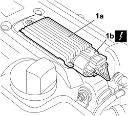
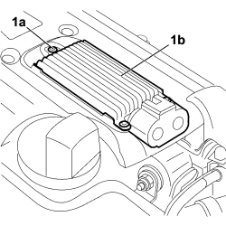
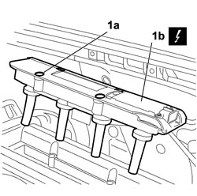
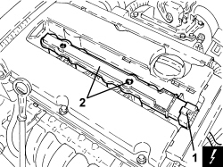

5510C14 IGNITION COIL/S - R.R.
- Path
- Procedures > 55 ELECTRICAL EQUIPMENT > 5510 ENGINE IGNITION > 5510C COIL, ECU, SENSORS > 5510C14 IGNITION COIL/S - R.R.
- Kind
- repair procedure (removal / refitting; the operation number is the code)
- Applies to
- engines: 1.8, 2.2; all production periods
- Interactive page
- https://sloeber94.github.io/elrnDB-fCrm/en/#/194000696
Applies to: engines: 2.2; all production periods
 Removing
Removing
 Refitting
Refitting- Turn the ignition key to the OFF position.
- Disconnect the negative battery terminal.
Description | Connector | |
|---|---|---|
BATTERY |
- Detach the upper engine protective cover releasing it from the retaining pins.
1. Release the anchorage and disconnect the electrical connection (1b) from ignition module (1a).
Description | Connector | |
|---|---|---|
IGNITION COIL | See A030 IGNITION COIL |

Applies to: engines: 2.2; all production periods
1. Undo the three bolts (1a) securing the ignition module (1b) and remove it from the vehicle, disconnecting it from the underlying built-in connection.
Description | Connector | |
|---|---|---|
IGNITION COIL | See A030 IGNITION COIL |

Applies to: engines: 2.2; all production periods
1. Undo the four bolts (1a) securing the ignition coil/reel unit (1b) for connection to the spark plugs and remove from the vehicle.
Description | Connector | |
|---|---|---|
IGNITION COIL | See A030 IGNITION COIL |

Applies to: engines: 2.2; all production periods
Refitting
Removing- Check the ignition coil/reel unit is not damaged
- Position the ignition coil/reel unit for connection to the spark plugs and secure with the four bolts.
Description | Connector | |
|---|---|---|
IGNITION COIL | See A030 IGNITION COIL |
- Fit the ignition module on the vehicle, connect to the underlying electrical connection and tighten the three bolts.
- Connect the ignition module electrical connection and do up the anchorage.
Description | Connector | |
|---|---|---|
IGNITION MODULE |
- Reconnect the negative battery terminal.
Description | Connector | |
|---|---|---|
BATTERY |
Applies to: engines: 1.8; all production periods
Removing
RefittingOp. 1016A40 IGNITION COIL COVER ON CYLINDER HEAD - R+R
1. Disconnect the electrical connection from the ignition coil module.
Description | Connector | |
|---|---|---|
1 | Ignition module |
2. Undo the bolts and remove the ignition coil module.

Applies to: engines: 1.8; all production periods
Refitting
Removing- Place the ignition coil module in its housing and secure it tightening the bolts to the recommended torque.
Component | Fastening | dia | Value (daNm) | Validity |
|---|---|---|---|---|
Ignition coil module | Bolt | M6 | 0.6 ÷ 1.0 | 1.8 |
- Connect the electrical connection of the ignition coil module.
Topics linked from this page (3)
Topics that link to this page (6)
- 5505AE ENGINE MANAGEMENT CONTROL UNIT POWER SUPPLY FUSE CIRCUIT CHECK
- 5505AE ENGINE MANAGEMENT CONTROL UNIT POWER SUPPLY FUSE CIRCUIT CHECK
- 1016A20 SINGLE TAPPET COVER -R.R AND REPLACE GASKET
- 1036H10 VALVE TAPPETS - CHECK AND ADJUST CLEARANCE, IF NECESSARY
- 5510C05 ELECTRONIC POWER MODULE - R R
- 5510D10 SPARK PLUGS - R+R